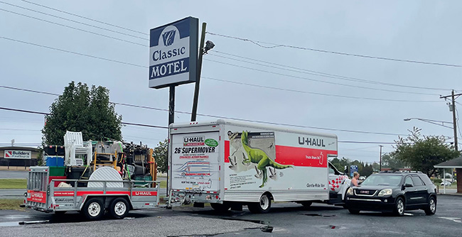

As Delaware's population booms -- driven in no small part by an influx of retirees -- local governments have been unwilling to fast-track multifamily housing developments in urban cores and reform local zoning ordinances to accomodate new arrivals and long-time residents.
The vast majority of housing permitted in Delaware since the late 20th century has been single-family: the least space-efficient form of housing, made even less efficient by minimum lot size requirements in county and municipal zoning codes.
The result? A mounting homelessness crisis and increasing reliance on overcrowded, substandard housing -- often manufactured housing or remnants of a bygone era of high-density housing construction.
From Wilmington to Seaford, families and low-wage workers have turned to motels and tents as options of last resort, and there is relatively little new housing in the pipeline to relieve market pressures and drive down median rental prices.
The Delaware State Housing Authority and community partners, including Housing Alliance Delaware, advocate for supply-side solutions to the state's housing crisis, but local-level advocacy is scarce.
Rental vacancy rates are a basic indicator of rental housing availability. Delaware has among the lowest rental vacancy rates in the United States as of 2022, surpassed only by several New England states. With rental options scarce, the state's rental assistance program has been forced to abandon long-subsidized units in high-demand areas like Rehoboth in favor of units in more distant rural communities from which low-income workers commute. The subsidy for a single unit in Rehoboth could cover two units in Laurel, for instance.
| Year | Rental Vacancy Rate |
| 2015 | 6.4% |
| 2016 | 8.1% |
| 2017 | 6.4% |
| 2018 | 7.1% |
| 2019 | 6.3% |
| 2020 | 6.1% |
| 2021 | 3.8% |
| 2022 | 3.5% |